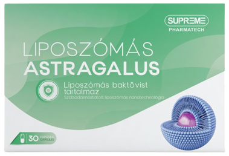

Cikkek •
Aranytartalék •
Interjú
Duzzanat, fájdalom és lábgörcsök: A "szennyezett" erek 3 hűséges társa. Van-e olyan kúra, amely otthoni körülmények között is elvégezhető?
Mi a koleszterin és a vérrögök legnagyobb ellensége, és az erek legjobb
barátja?
Fájdalmas esték? Duzzadt lábak, feszülő vádli, sajgó bokák? Ez az úgynevezett
vaszkuláris ödéma,
amikor a szennyezett és legyengült erek folyadékot juttatnak át a falaikon a környező
szövetekbe. A
lábak izomfájdalma és a görcsök együtt járnak a duzzanattal, ami a nem megfelelő
vérellátás
eredménye.
Mindenki tudja, hogy a vérnyomás, a stroke és a szívroham a koleszterinnel "szennyezett"
erek
következménye. Azonban kevesen tudják, hogy ez csak a jéghegy csúcsa. A "szennyezett"
erek 10-ből
9-szer felelősek az állítólag gyógyíthatatlan krónikus betegségekért.
Fejfájás, megemelkedett vérnyomás. Az ízületek fájnak, ropognak, a nyak beáll, a hát
pedig nem
hajlik. Este a lábak megduzzadnak, reggel pedig az arc. Állandó fülzúgás. Zsibbadt ujjak
és
végtagok. Csökkent látás és romló memória. Állandó gyengeség. Sokan azt mondják, hogy ez
öregség. Ez
valóban így van?
Ezekre a kérdésekre adott választ a Drezdai magánklinika vezetője, kardiológiai és
idegsebészeti
szakértő, Jürgen Richter.
Jürgen Richter több mint 30 nyitott koponyaműtéten van túl. A legfiatalabb ember csak
2 éves volt.
A szakértő mestere a komplex orvosi folyamatok egyszerű szavakkal történő
ismertetésének. Eddig
17 népszerű tudományos könyvet és orvosi útmutatót írt egészségügyi oktatásban nem
részesült
emberek számára. Teljesen meg van győződve róla, hogy ereink 90%-ban felelősek
szervezetünk
egészségéért, a tisztaságuktól pedig általános közérzetünk függ.
Miért jelentik az erek az egészség 90%-át?
– Ön folyamatosan azt mondja, hogy az erek a test egészségéért 90%-ban felelősek. Miért van így?
– Az emberi testben melyik a legnagyobb szerv? Nagyon kevesen tudják. Még az
orvostanhallgatók is
gyakran tévednek. Leggyakrabban az agyat és a májat nevezik meg. A képzettebbek azt
mondják, hogy a
bőr. De valójában a legnagyobb szerv az érrendszerünk.
2,5-szer
körül lehet ölelni
a Földet
egyetlen ember ereivel

Csak gondoljon bele. Ha "szétbontanánk" az emberi test ereit és egy hosszú szálba kötnénk azokat, ennek a szálnak a hossza körülbelül 100 000 kilométer lenne.
Hogy világosabb legyen, a Föld egyenlítőjének hossza 40 000 kilométer. Tehát
egyetlen ember érrendszere, akár 2,5-szer is körülölelheti a bolygót.
Hogy tetszik ez a méret?
Az erek nem csak csövek, amiken keresztül folyik a vér. Ez egy összetett és egyedi
szerv, amely hiba
esetén azonnal betegséget jelez.
A lábak rossz erei – visszerek, ödéma és nehéz mozgás, fagyott vagy éppen
ellenkezőleg,
elviselhetetlen égő érzés a lábakban. A rossz keringés nem biztosít megfelelő védelmet a
baktériumok
ellen, ezért kialakul a gomba. A körmök vastaggá és durvává válnak.
A májat tápláló erek elzáródása
hepatitiszhez vezet. Keserű íz a szájban. Enyhén zsíros ételek fogyasztása után is
keserű íz alakul
ki a szájban.
Elgyengült ízületek és szennyezett erek következménye
a porcok kiszáradása. Az ízületek fájnak és recsegnek, osteochondrosis alakul ki, majd
sérv.
A végbélerek tónusának elvesztése, ami a rossz keringés mellett alakulhat ki,
okozhatja az
aranyeret.
A szem ereinek károsodása esetén romlik a látás, gyakran minden homályos és
szemcsés.
Szürkehályog alakul ki. A szempirosság, amelyet gyakran a fáradtságnak tulajdonítunk,
valójában vérzés
– a legkisebb szemkapillárisok sérülése.
Nehézkes agyi vérkeringés – szédülés, fülcsengés, feledékenység. Előfordult már
önnel olyan,
hogy kiment a konyhába, de elfelejtette, miért is indult oda? Vagy egy jól ismert szó
van a nyelvén,
de sehogy sem tudja felidézni? Ezek mind az agyi erek romlásának jelei.
És persze a rossz erek királynője, őfelsége Magas vérnyomás. A magas vérnyomás a stroke anyja és a szívroham nővére.
Az erek a mi táplálkozási rendszerünk, bennük maga az élet folyik. És ha blokkolják az
útvonal egy
fontos részét, az élet megáll.
Az "eldugult" erek súlyos szövődményekhez vezethetnek, beleértve a halálos
kimenetelt.
A túlsúly is egy ponton szorosan kapcsolódik az erekhez. A koleszterinnel
eltömődött erek
éhhalálra ítélik a szerveket, az erek nem tudnak elegendő tápanyagot eljuttatni
hozzájuk. Ezért az
agy jeleket küld - ideje enni. És az ember eszik. De a szervek egyre kevesebb ételt
kapnak az
eltömődött erek miatt. Az agy ismét parancsot küld - enni kell. És ez így megy tovább.
Ennélfogva alakul ki a folyamatos vágy, hogy valamit rágjunk, édeset és zsírosat
kívánunk – a
test kalóriát igényel.
Amikor a kollégáim azt mondják az embereknek: "Önnek magas vérnyomása van a túlsúlya
miatt",
összekeverik az okot és a következményt. Nem azért alakul ki magas vérnyomás, mert
túlsúlyosak.
Azért lesznek túlsúlyosak, mert szennyezett erei vannak.
A jól ismert mondást, miszerint "Egészség nélkül nincs boldogság" ekképp folytathatnánk: "Tiszta erek nélkül nincs egészség."
Ezért nem győzöm ismételni: ha teljes életet akarnak élni, tisztítsák meg és állítsák
helyre az
ereiket. A tiszta erek képezik a krónikus betegségek 90%-ától való megszabadulás
kulcsát,
amelyek közül néhányat gyógyíthatatlannak tekintenek.
Mi szennyezi még az ereket, a koleszterinen kívül?
Mindenki tudja, hogy a koleszterin gonosz. Elzárja az ereket, szűkíti az artériákat és felborítja a vérkeringést. De nem ő az egyetlen bűnös, igaz?
6,1 kg
a
szennyezőanyag teljes tömege, amely 50 éves korig felhalmozódik az erekben.
Koleszterin
– Igen, igaza van. A koleszterin-plakkok, vagy más néven „atheroscleroticus plakkok”, az
érrendszeri
szennyezettség kb. 65–70%-át teszik ki.
50 éves korig akár 6 kg koleszterin plakk is felhalmozódhat az emberi erekben. A
koleszterin 4-5-szörösére szűkítheti az artériákat.
Csak gondoljon bele. Ha az erek ármérője az ön ujja, akkor a plakkok 4-szeresére szűkítik.
Maguk a koleszterin plakkok nem életveszélyesek. Igen, az életminőség csökken, a
vérnyomás
emelkedik, fejfájás, ízületi fájdalom, gyengeség és apátia jelentkezik. A vérrög, amely
szintén
kialakul az erekben, sokkal veszélyesebb.
Vérrög
A vérrögökből jelentősen kevesebb halmozódik fel. De az a veszélyük, hogy
instabilak.
Bármelyik pillanatban egy vérrög leszakadhat és elindulhat az ereken keresztül, hogy
megkeresse
áldozatát.
Ha a vérrög elég nagy, akkor szorosan "lezárja" az eret. Iszkémia alakul ki, a szerv
vérellátásnak
teljes leállása, ami ezen az eren keresztül volt táplálva.
Az iszkémiás stroke egy agyi ér elzáródása. A szívroham – elzáródás a szívartériában.
Iszkémia a
májban, tüdőösszeomlás, veseelégtelenség. Az aranyér nem más, mint a végbél ereinek az
iszkémiája.
Még a láb kisereinek az elzáródása is idővel nekrózishoz vezet.
Érelmeszesedés
Az érelmeszesedés az artériák megbetegedése, amely esetén vegyi anyagok és
élelmiszer-adalékanyagok
okozta érrendszeri szennyezettség alakul ki. A legtöbb szennyezettség az agy ereiben
halmozódik fel.
Az ilyen lerakódások veszélye az, hogy éles, kristályos szerkezetük van. Éles
szűkülésnél - stressz,
fizikai erőfeszítés vagy időjárás okozta érgörcs esetén az éles sókristály átszúrhatja
az eret, ami
megszakadhat. Az agyi ér szakadása pedig vérzéses stroke-ot okoz.
A rossz erek 4 nyilvánvaló és 7 rejtett oka
– Milyen tünetek utalnak arra, hogy az ereim eltömődtek "szennyeződésekkel"? Hogyan lehet megérteni, ha szervezetünk azt kiáltja, "Tisztítsd ki az ereidet!"?
– Őszintén szólva, ha 45 évesnél idősebb és soha nem tisztította meg ereit, nagy
valószínűséggel gondjai vannak az ereivel.
45 év
az a mérföldkő, amely
után
meg kell tisztítani az ereket
Az erek eltömődése koleszterinnel, só- és kálciumlerakódásokkal és vérrögökkel valójában
egy
természetes, korral kapcsolatos folyamat. Természetesen, a modern termékek, a dohányzás,
az alkohol
a folyamatot akár 5-8 -szorosára felgyorsíthatják. De mind emberek vagyunk és nincs
menekvés, ilyen
világban élünk.
A szakértők négy fő betegségről beszélnek, amelyek rossz erek miatt alakulhatnak ki:
- 1. Magas vérnyomás Instabil vagy folyamatosan magas vérnyomás, amelyet gyógyszerekkel kell stabilizálni. A fő és legfontosabb mutató.
- 2. Visszerek Csúnya kidagadó erek a lábakon, nehézség és fájdalom, duzzanat. A koleszterinszennyezés és a vérrögök „lezárják” a vénás szelepeket. Idővel jelennek meg vaszkuláris "csillagocskák", amelyek aztán gyakran egy érrendszeri "hálóvá" alakulnak. És a háló általában már teljes értékű visszérré fejlődik.
- 3. Aranyér Amikor eldugulnak a végbélerek, csomókká alakulnak. Ha elzáródnak a vért szolgáltató erek, anális repedések léphetnek fel.
- 4. Osteochondrosis A vérkeringés hiánya a porcokban. A porcok megkeményednek, és kopásnak indulnak. Nincs idejük felépülni. Nem újulnak meg. Elveszítik enyhe kopási képességüket. Idővel kialakulhatnak sólerakódások és egyfajta púpot képezhetnek.
7 jel, amely az érrendszeri szennyezettségre utalhat:
- 1. Ödéma A piszkos ereknek nincs idejük kipumpálni a folyadékot. Felborul a víz-só anyagcseréje. Estére a lábak úgy megdagadhatnak, hogy még a zokni is mély nyomot hagy benne. Puffadt arc és táskák a szem alatt is jelentkezhetnek, ujjak megduzzadhatnak, amelyekről nem lehet levenni a gyűrűt, vagy duzzadt has is lehet az egik jele.
- 2. Fülzúgás Az alig hallható sípolástól a hangos csengetésig, amelyek zavarják a koncentrációt. Ez az agyi erek fokozott feszültségének a lehetséges következménye, amely nyomást gyakorol a dobhártyára.
- 3. Szédülés "Részegség" érzés, éles és hirtelen fellépő szédülési rohamokkal, ami gyakran annak a jele, hogy "éhezik" a vesztibuláris rendszer. Gyakran ezzel együtt szenvedhet a hallás is.
- 4. Álmatlanság Úgy érzi, álmos, fáradt, de az ágyban fekve fél éjszaka nem tud aludni? Ennek oka az agyalapi mirigy vérellátásának hiánya. Nem termel melatonint, alvási hormont.
- 5. Gyengeség Semmit sem akar csinálni, csak feküdni és enni. Ez valószínűleg azért történik, mert a szervezet energiatakarékos üzemmódba kapcsol. Valószínűleg a szervek a szennyezett erek miatt nem kapnak elegendő tápanyagot és az életben maradásért a szervezet igyekszik maximálisan csökkenteni az aktivitást.
- 6. Látászavarok Az elhomályosodás és az élesség csökkenése a szemerek károsodására utalhat.
- 7. Ízületi fájdalom Reggelente nem érzi magát frissnek és kipihentnek, időbe telik az alváskor megmerevedett ízületek mozgékonyságának visszanyerése? Ez az ízületi folyadék hiányának a jele lehet.
Jelen van legalább egy jel? Valószínűleg a vérerek fújják a riadót?
Leggyakrabban az embereknél több jel fordul elő különböző kombinációkban egyszerre. Vagy mind egyszerre.
Azok, akiknek sikerült kiküszöbölni a betegségük okát, minden betegség ellen külön
küzdenek.
Vérnyomáscsökkentő tabletták, kenőcsök visszerekre, kúpok aranyérre, gélek porckopásra.
És persze
fájdalomcsillapítók, fájdalomcsillapítók, fájdalomcsillapítók...
Egyszerűen csomagszám dobálják ki a pénzt. Mert minden betegségnek
ugyanaz az oka - az érelzáródás.
És ezzel kell kezdeni, az erek általános tisztításával.
Mivel kell megtisztítani az ereket a koleszterintől, a vérrögöktől és a szennyeződésektől?
Hadd kérdezzek valamit. Vegyük példának egy 50 éves asszonyt, aki túlsúlyos, magas a vérnyomása és visszerektől szenved. Az időjárásra egy barométer precizitásával reagál, ropognak az ízületei, maga alá gyűri a gyengeség, az álmosság és a fejfájás.
Hogyan segítsünk neki? Mivel tisztítsa meg az ereit, anélkül, hogy végig kéne hallgatnia a szakértők megjegyzéseit, mint a: "Fogyjon le", "Ideje sportolni", "Diétázzon", "Ez már a korral jár" és hasonlók?
A legtöbb megszokott szer nem segít, és ha segít, akkor csak átmenetileg, ráadásul mérgezi a szervezetet.
– Igen, sajnos az egészség gyakran mindkét lábára sántít. Az emberek éppen ezért nem
szívesen
fordulnak szakértőhöz, és én ezt tökéletesen megértem. De ami az adott példát illeti, az
ember
nagyszerűen megbirkózik vele egyedül.
Van egy olyan szer, amelyről sok pozitív dolgot mondanak, ez a Astragalus. A
Astragalus 11-17 évvel meghosszabbíthatja az életet, segítve
csökkenteni a vérnyomást és elnyomva az
ingerültséget, anélkül, hogy fájdalmas kezeléseken kellene átesnie.
Biztonságos és nagyon hatékony.
Nincsenek szövődményei és mellékhatásai. Értágító hatásának köszönhetően
segít fokozni a szív vérellátását.
A Astragalus növényi kivonatok keveréke, amely segít fokozni a vérkeringést a szív
és agyi erekben, csökkenteni a vérnyomást.
A Astragalus rendszeres használat esetén elősegíti a szisztolés
és diasztolés vérnyomás csökkentését
1 kúra alatt.
Mindössze egy kúra alatt a Astragalus szerben található flavonoidok csökkentik a vérárammal szembeni ellenállást, ezáltal pedig csökken a vérnyomás, normalizálódik a szív- és érrendszer, valamint az idegrendszer működése.
Emellett antiaritmiás hatása van, lassítja a légzést, csökkenti a pulzusszámot,
fokozza a vizeletkiválasztást.
Még milyen hatással van a szervezetre? Segít megakadályozni a vérlemezke-aggregációt,
valamint antitrombikus hatása is van.
Javítja a vérerek állapotát, véd az idegszövet károsodástól ischaemia esetén.
A Astragalus jó hatással van a veseszövetre hipertónia esetén.
– Lenyűgöző. Hogy őszinte legyek, most hallok először a Astragalus termékről. De a hasonló szerekről már hallottam, amelyeket illetően Japánban és Izraelben törvényesen állapították meg a státusát előnyben részesített kúraként. Nálunk pedig az emberek még mindig bizalmatlanak velük szemben.
A kétségeink nagy árulók, sok mindenről lemondunk miattuk, és bizony sajnos a félelem gyakran meggátol minket a jó dolgok kipróbálásában.
– Hadd meséljek el egy sztorit a bizalmatlanságról.
1928-ban találták fel az első antibiotikumot, a penicillint. Könnyen segített
számos olyan
betegség esetén, amelyekben emberek milliói szenvedtek, és amelyek miatt emberek ezrei
vesztették életüket .
De a legtöbb ember nem hitte, hogy ez segíthet, mert már 1000-szer megégették magukat a
gyógyítási
kísérletekkel. Azok, akik 1000-szer megégették magukat, de nem féltek tenni egy próbát
1001-jére is,
meggyógyultak. De azok, akik feladták, és csak annyit mondtak, "Ez a soron következő
úgynevezett
csodaszer úgyse fog segíteni", nem élték túl, noha a segítség az orruk előtt volt.
A maga idejében a penicillin legyőzte a kor betegségeit: a vérhast, tífuszt,
tüdőpestist.
Most pedig a Astragalus szernek minden esélye megvan arra, hogy csökkentve a
vérnyomást, javítson a szervezet állapotán.
Az első lépések már folyamatban vannak - Japán, Svájc és Izrael - törvényesen
rögzítették a
tápanyagok jótékony hatását a vér- és érrendszerre. És valószínűleg ez az egyik oka
annak, miért pont ezekben az országokban
tartják az egészségügyi szintet igazán magasnak, az emberek pedig ritkábban betegednek
le.
Németországban a Astragalus szerről nem sokan tudnak és általában
csak magánklinikákon
ajánlják. Ezért néha az emberek egész életüken át végeznek kúrákat, sokba kerül a
fájdalomtól és
a szenvedéstől való magszabadulás.
Én is úgy gondolom, hogy a kétely a legnagyobb ellenségünk, ezért nem félek új dolgokat kipróbálni.
– Tegyük fel, megvettem a Astragalus terméket, kinyitom a kellemes tapintású dobozt, beveszem a javasolt adagot vízzel... Mi történik ezután? Hogyan fejti ki hatását a Astragalus?
– Ezután egy igazi természetes laboratórium indul be.
A galagonya kivonat segít javítani a szívműködést, csökkenteni a vérnyomást, tágítani az
ereket, megnyugtatni az idegrendszert.
A Astragalus ritka hasznos kivonatok kincsesbányája, amelyek együtt dolgoznak a magas vérnyomás csökkentéséért.
A Galagonya kivonat nagy mennyiségű vitamint, savakat és aktív nyomelemeket
tartalmaz. Nagyon
hatékony szívbetegségek esetén. Segít enyhíteni az idegességet, javítani a szívműködést,
tágítani az ereket, csökkenteni a pulzusszámot.
A száraz orvosi citromfű kivonat segít normalizálni a pulzusszámot és a
vérnyomást, valamint
hipoglikémiás tulajdonságokkal rendelkezik.
A D3-vitamin az az anyag, ami nélkül az idegrendszer nem lehet meg. Javítja a
vérkeringést, és
részt vesz a vér képződésében.
A Astragalus átfogó hatást fejt ki: segít csökkenteni a vérnyomást, ezáltal pedig
javítani a szív- és érrendszer állapotát. Segít
szabályozni a szívritmust és a szívműködést.
Pillangóhatás
A Astragalus olyan, akár egy pillangó szárnycsapása, ami átváltozást vált ki. A Astragalus azáltal, hogy javítja a vérerek állapotát, a vérnyomás csökkentését indítja el.
1 kúra Astragalus után úgy érezheti magát, mintha újjászületett volna.
A Tiszta erek program keretében történő megvásárlás
– Amennyire mi tudjuk, a Astragalus nem kapható a gyógyszertárakban. Miért?
– Sajnos igen.
Az a gond, hogy ezt a magángyógyszertári láncok kapzsisága okozta, amelyek megkövetelték
a Astragalus
gyártójától, hogy többet fizessen a bejelentett összegnél! A gyártó árainak
felszámolását
követelték, valamint a már egyébként is nagy árrés
növelését.
Továbbá az emberek nagyra fogják értékelni a Astragalus szert és
valószínűleg nem fognak
vásárolni más szereket. És ez a gyógyszertárak anyagi veszteségéhez vezet. Ezért a
lehető
legmagasabb árat akarják megállapítani a Astragalus számára.
Ennek eredményeként a Astragalus gyártója felbontotta a gyógyszertárakkal kötött
szerződéseket, és
csak az Interneten keresztül értékesít. Végtére is, ez a helyes megoldás.
A Tiszta erek kedvezményes program

Jelenleg érvényes a Tiszta erek program, amelyet egy jótékonysági alapítvány
finanszíroz. A célja
az, hogy az egészségesebb és ezáltal tisztább ereket szolgáló termékek elérhetővé
váljanak. És a Astragalus is
rajta van a termékek listáján, így mindenki, aki részt vesz a programban, kedvezményesen
kaphatja
meg a Astragalus szert.
– Mit kell tenni, hogy bekerüljünk a programba?
– Tulajdonképpen nincs semmi különleges feltétel:
A Astragalus megszerzésének feltételei:
- A "Astragalus" személyes használatra történő rendeléséhez a megrendelőnek és a címzettnek egyeznie kell. Ez a viszonteladók elleni küzdelem miatt szükséges, akik kereskedelmi mennyiségben próbálják megvásárolni a Astragalus szert, hogy később a saját árukon adhassák el.
- Töltse ki jelentkezését a hivatalos jelentkezési lapon keresztül. A hivatalos jelentkezési lap garantálja a termelői árat és a viszonteladókkal szembeni védelmet.
– Meddig tart a program?
– Amíg el nem fogy a kijelölt Astragalus adag. De azt hiszem,
hogy a termék 3-4 hét
alatt el fog fogyni. És ez annak ellenére, hogy nincsenek reklámok a TV-ben és a
rádióban. Az
emberek információt cserélnek egymással, ajánlják a barátaiknak és rokonaiknak. Még
számunkra is
meglepő volt, hogy a Astragalus szerről szóló információk ilyen gyorsan terjednek.
Ezért azt javaslom, hogy minél hamarabb rendeljék meg a Astragalus terméket. Idén már
biztosan nem ismétlik meg ezt a programot.
Továbbá ajándékba kaphat egy "Egészségnaplót" is. Ebben a naplóban hasznos tippeket talál az otthoni egészségfejlesztéshez.
Továbbá ajándékba kaphat egy "Egészségnaplót" is. Ebben a naplóban hasznos tippeket talál az otthoni egészségfejlesztéshez.
Rendeljen Astragalus, és kapjon ajándékba egy egyedi
egészségügyi naplót


Vélemények